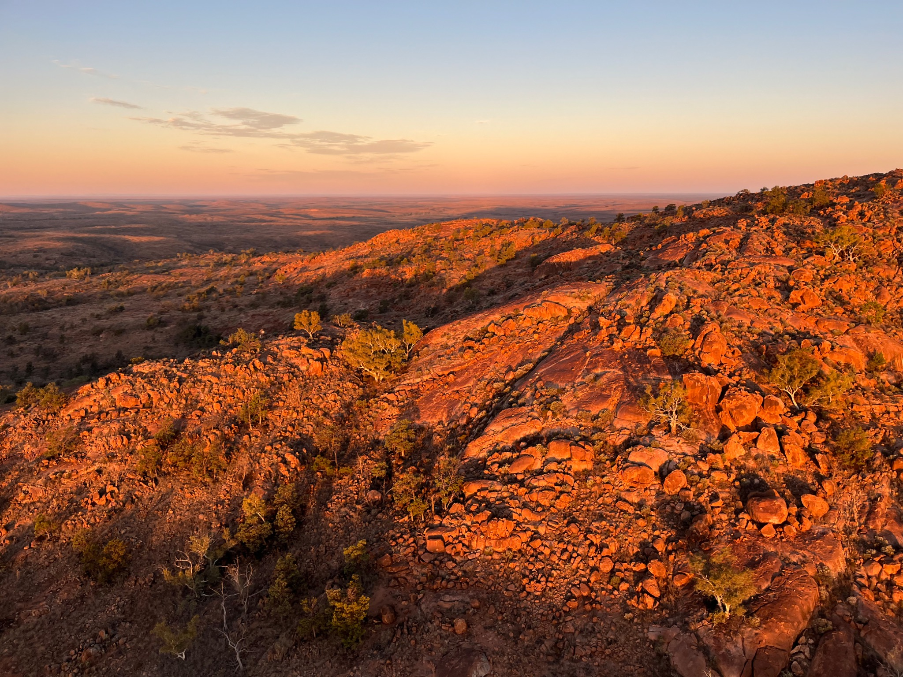
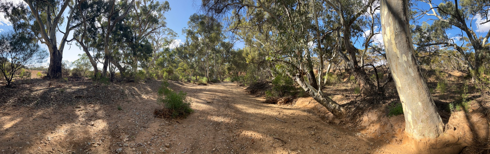

Conservation & Environmental Management
Protecting What Matters
Reducing the impacts of vertebrate pest animals can support biodiversity, habitat restoration, agriculture, biosecurity and the protection of sensitive places.
Vertebrate pest animals can create impacts that extend well beyond individual properties.
Predation, grazing, browsing, soil disturbance and competition can affect entire ecological communities and undermine efforts to restore degraded landscapes.
Effective pest management can help
- protect native wildlife
- support threatened species recovery
- improve native vegetation regeneration
- protect remnant vegetation
- reduce grazing and browsing pressure
- support habitat restoration
- protect agricultural productivity
- reduce damage to crops and pasture
- protect infrastructure
- reduce biosecurity risks
- prevent degradation of environmentally sensitive areas
- protect culturally sensitive locations and heritage values.
Supporting broader land management objectives
Pest control is rarely a complete solution on its own.
The most effective programs often combine population reduction with other management measures such as habitat restoration, exclusion, monitoring and ongoing maintenance.
Fleurieu Ethical Marksman Service works with landholders and organisations to provide targeted control that complements broader environmental and land-management objectives.
Discuss your land-management objectives
Tell us about the species, property and values you are seeking to protect.
Make an EnquiryLandscape Protection
Managing impacts across the landscape
Effective pest animal management forms part of broader environmental stewardship—protecting native vegetation, habitat, biodiversity, waterways and culturally sensitive areas from avoidable damage and degradation.
